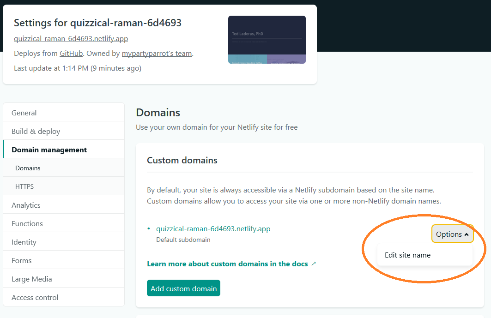

Want to learn how to build a website using {distill}? This is a short blog post explaining the basics of Distill.
https://github.com/laderast/distill_website/
Workshop Video
Learning Objectives
- Learn the basic components of a
distillwebsite - Build and preview your website using the Build tab
- Customize the website with your bio and your picture
- Add links and entries to your Navbar Menu
- Add knitted html files as article links
- Get your website live using Netlify Drop
- Update your website by claiming it and registering it
- Change your domain name to a better one.
Before You Start
- Install R/RStudio Desktop to your Computer.
- Install the following packages in R:
install.packages(c("tidyverse", "postcards", "distill", "usethis"))- Create a website project in your home directory using
usethis.
usethis::use_course(url="laderast/distill_website",destdir=".")- Take a look at the website before we get started:
https://distill-example.netlify.app/
- Gather up the follwing materials:
- Links to Social Media (twitter, linkedin, etc)
- Bio
- Headshot
- Knitted
.htmlfiles you want to share
- Sign up for a netlify account and log in: https://netlify.com
Taking a tour of the Project
These are the main files for the project.
index.Rmd- This is the main website page.about.Rmd- This is a nice looking about page built using the{postcards}package.image- A folder. Any images you put in here can be accessed byimage/ted.jpgin your pages.articles/- A folder. This is a nice place to park your articles. For right now, it’s probably easier to have self-contained articles (single html files)_site.yml- Customize this to change menus and links_site/folder - this contains your rendered website - you’ll drop this folder into Netlify Drop and it will serve it.theme.css- this is where you can set appearance options, such as font, font-size, and colors.
How does {distill} work?
{distill} is what is called a static site generator. It takes Markdown and Rmarkdown and converts them to . .html files.
Much like any RMarkdown file, {distill} uses {knitr} and pandoc to build your website files that are contained in an RStudio Project. It knits your .Rmd files, converting them to .html files to a folder. The default name of this folder is called _site and it contains all of them files you need to upload to make a website.
What is Netlify?
Netlify is what is called a hosting service. This is a network of computers called web servers that are accessible via web addresses that will serve your website files when they are requested by a web browser.
The amazing thing about Netlify is that it is mostly free and it is very fast, no matter where you are (they have web servers almost everywhere).
We’ll use Netlify Drop to get our website files up and accessible as quickly as possible.
Customize your about links
Take a look at about.Rmd and start filling out the front matter with your own links:
links:
- label: LinkedIn
url: "https://www.linkedin.com/in/ted-laderas-0714a92/"
- label: Twitter
url: "https://twitter.com/tladeras"
- label: Portfolio
url: "index.html"
- label: Email
url: "mailto:email@email.com"Adding a photo
Add your photo to the images folder. Change the line in about.Rmd:
image: "image/ted.jpg"to the name of your file. For example, if your file is named jane.jpg and you put it in images:
image: "image/jane.jpg"Building your website using the Build Tab
In the top right panel in RStudio (next to Environment and History), there is a “Build” Tab.
Press the Build Website to run knitr, which will knit your website to the _site folder. This is where your rendered content lives.

Previewing your website
- Open the
_sitefolder and click on theindex.htmlfile (make sure you’re viewing in web browser)- This is your main link to the website (the entry point). For example, if I was hosting my website at https://laderast.github.io/, this would be the first page that I would see.
- Your
aboutpage is available asabout.htmlin the_sitefolder. - Click away and make sure that everything works (links in menu, etc). If not, update the
_site.ymland build it again.
Try out different postcards themes
The postcards package has the following built in themes:
jollajolla_blueonofretrestles- which your current site uses
Change this line in your about.Rmd file to the theme of your interest and start building again:
output:
postcards::trestlesAdd Your Rendered .html files to the articles/ folder
You can now add your articles to the articles/ folder.
There are a couple example articles here. Add your own files here.
In general, you’ll put knitted html articles here. Distill does not rebuild articles, it leaves that up to you.
The relative path to access articles is like this:
articles/crops.html
You’ll use this when adding links to your menu.
Getting Your Website Online
We’ll take the _site folder with our generated website and drop this entire folder into Netlify Drop.
https://drop.netlify.com

Updating Your Website
The first thing you want to do is claim your site and register for a Netlify account. That ties your newly created website to your account so you can update it.
When you update your website with the Build Website button, you’ll drag the _site folder onto the deploy zone. This is under the deploy tab:

More info here: https://docs.netlify.com/site-deploys/create-deploys/#drag-and-drop
Customize Your Domain
That crazy name is the address of your site. To change it, you can click on the Domain Settings button:
In the following page, click the Options >> Edit Site Name button. You can change the first part of the domain, such as “myportfolio.netlify.app).

Styling your website
Note that this only applies to the main distill website and not the about.html, since that is styled separately.
In _site.yml, try uncommenting this line and seeing how the site changes.
#theme: theme.cssYou can modify the appearance of your website by altering the theme.css file. Much more info about this here:
https://rstudio.github.io/distill/website.html#theming
Creating New Websites
If you want to start from scratch, I highly recommend the Distill tutorial here:
https://rstudio.github.io/distill/website.html
You may want to setup your webpage as a blog, which lets you add posts by date:
https://rstudio.github.io/distill/blog.html
Putting your site code on GitHub
This is beyond the scope of this tutorial, but you can put your site code up on GitHub as well. This has the following advantages:
- Lets others contribute to your website
- Can host on GitHub Pages as well
- Lets others reuse your code for their own website
If you’re interested in this, I really recommend Happy Git with R as a way to get started.
Acknowledgements
Thank you to RStudio for the {distill} package. It is so great!
Portions of this tutorial are adapted from: https://rstudio.github.io/distill/website.html and from https://rstudio.com/resources/webinars/sharing-on-short-notice-how-to-get-your-materials-online-with-r-markdown/
Citation
@online{laderas2021,
author = {Ted Laderas and Ted Laderas},
title = {An {Introduction} to \{Distill\} for Websites},
date = {2021-03-19},
langid = {en}
}